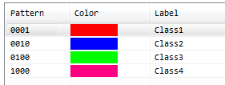
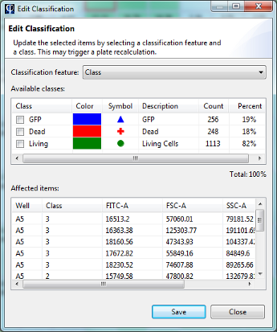
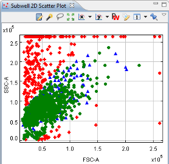

It is often useful to divide a set of data into distinct groups, or classes. Phaedra supports this notion on the subwell level, through the concept of subwell classification. A common scenario is cell classification, where cells are labeled to distinguish living cells from dead cells, fluorescence-expressing cells versus non-expressing cells, etc.
Before classification can be performed, a classification feature must first be defined. This is a feature whose value is the class that has been assigned to each subwell item.

For example, you can define a classification feature called 'Cell State' with two classes: Living and Dead.
For more information about setting up a classification feature, see Editing the Protocol Class.
With manual classification, classes are assigned to cells by selecting groups of cells on an image, in a table or in a plot.
Once a selection has been made, a class can be assigned to the selection by clicking on the classification button:


After confirming the classification, the items will be updated with their new class value. This may trigger a recalculation, for example when calculated well features have been defined that use a classification feature in their formula.
Manual classification is not always feasible. If you need to perform classification on a large number of wells, you may consider using automated classification. This requires the use of a workflow. See Using Workflows for more information about running a workflow, or contact a Phaedra administrator to help you with setting up a new workflow.
Of course, automated classification only works if the classification criteria can be applied by the computer itself, without user intervention or visual inspection. A typical example of automated classification is applying a fixed threshold on a subwell feature that expresses marker intensity.